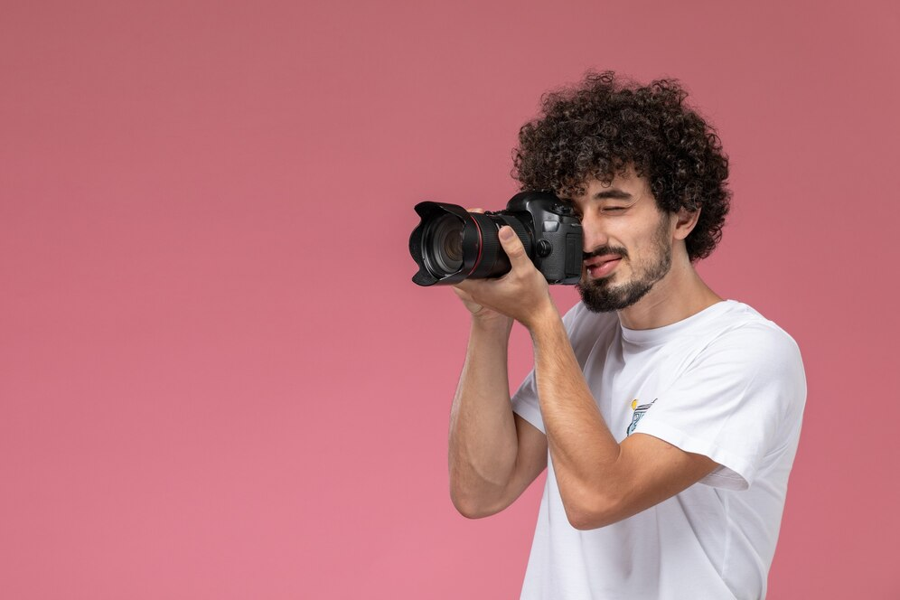

Hola, soy Jesús Aldana, fotógrafo profesional. En esta página te estaré mostrando una selección de mis mejores fotografías, capturadas con dedicación y pasión por el arte visual. Aquí podrás conocer un poco más de mi trabajo en retratos, paisajes y momentos únicos que cuentan una historia. ¡Bienvenido!